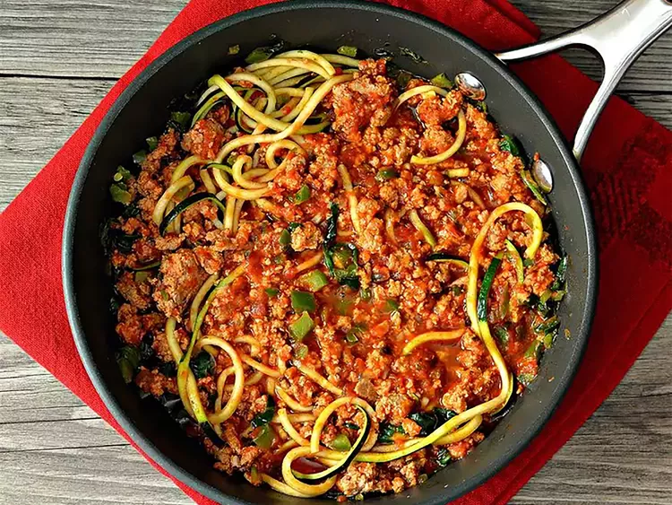

Turkey Spaghetti Zoodles

Description
Swap noodles for "zoodles" with zucchini we're starting to stock up on this time of year. This is "a super simple one-pot dinner that's low calorie, low carb, paleo, gluten-free, and takes just 10 minutes to make. This will be your go-to weeknight dinner! Serve immediately or store in the refrigerator up to 3 days," says creator Megan Olson.
ingredients
- 1 lb (450 g) lean ground turkey
- 2–3 medium zucchini, spiralized into zoodles
- 8 oz (225 g) whole-wheat spaghetti (optional, or use only zoodles)
- 1 tablespoon olive oil
- 1 small onion, diced
- 3–4 cloves garlic, minced
- 1 can (14–15 oz) crushed tomatoes
- 1 can (14–15 oz) tomato sauce
- 1 tablespoon tomato paste
- 1 teaspoon dried oregano
- 1 teaspoon dried basil
- ½ teaspoon red pepper flakes (optional)
- Salt and black pepper to taste
- Grated Parmesan cheese
- Fresh basil or parsley
Preparation
- Cook the whole-wheat spaghetti according to the package instructions if using.
- Heat olive oil in a large skillet over medium heat.
- Sauté the onion until softened.
- Add the garlic and cook for about 30 seconds.
- Add the ground turkey and cook until browned.
- Stir in crushed tomatoes, tomato sauce, tomato paste, oregano, basil, red pepper flakes, salt, and black pepper.
- Simmer the sauce for 15–20 minutes.
- Lightly sauté the zucchini zoodles for 2–3 minutes.
- Combine the spaghetti and/or zoodles with the turkey sauce.
- Garnish with Parmesan cheese and fresh basil or parsley.
- Serve hot.